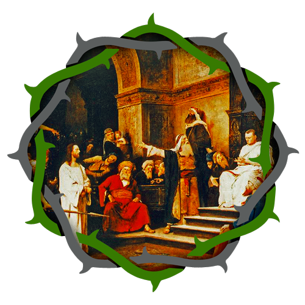

2:15am- Jesus is taken to Pilate and accused

My sweetest Jesus, led away as a malefactor to Pilate, and then turned by Herod into ridicule, and treated as a madman, have mercy on us.
Fruit
- For the grace to be tuned to the promptings of the Holy Spirit regarding the truth.